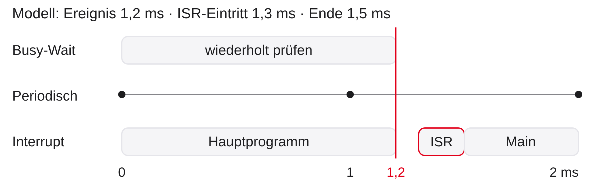
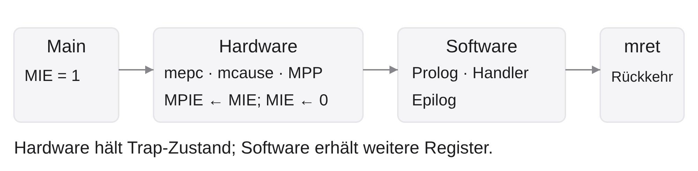
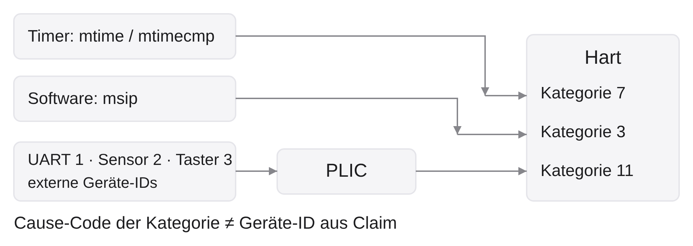
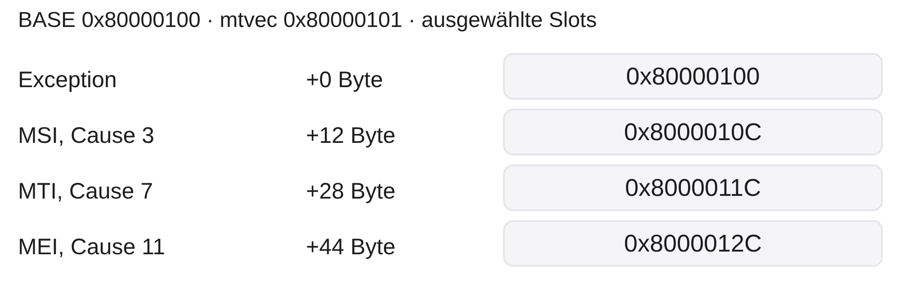
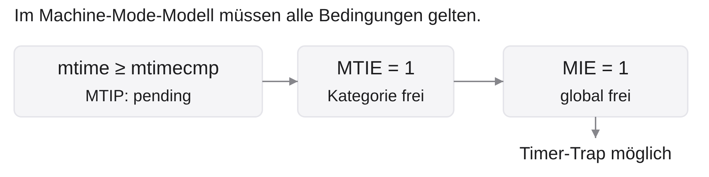
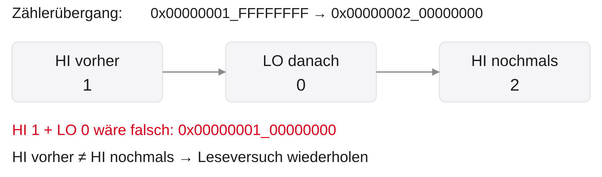
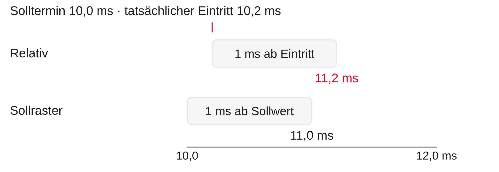
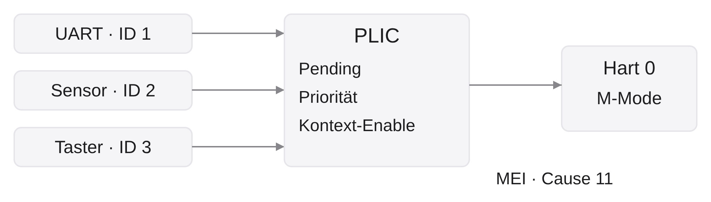
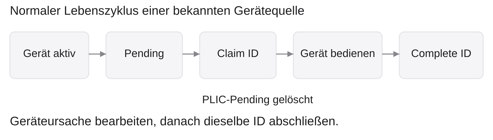
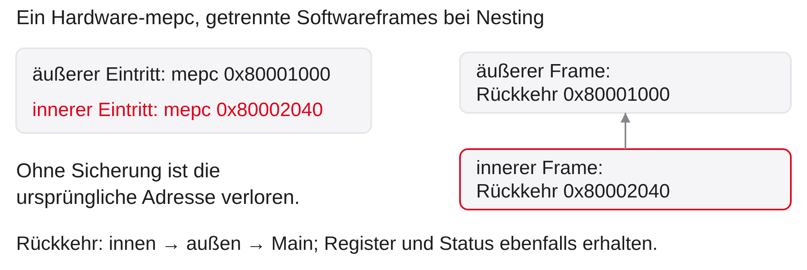

03 · Interrupts & Timer
Mikrocomputertechnik 3 · Zeit und Ereignisse im RISC-V-System
Prof. Dr.-Ing. Daniel Klünder
Vom Speicher zum Ereignis
Vorlesung 1: Speicher und Geräteadressen
Vorlesung 2: Cache-Kopien und Zugriffskosten
Heute: Wann muss das Programm auf ein Ereignis reagieren?
Ziel: Zeit erfassen, Ursachen unterscheiden, Arbeit passend aufteilen
Ein schneller Speicherzugriff beantwortet noch nicht, wann ein Programm einen Sensor oder einen Zeitpunkt beachten soll. Vorlesung 1 hat Memory-Mapped Input/Output, Ein- und Ausgabe über Geräteadressen, eingeführt. Vorlesung 2 erklärte, wie Caches Kopien gewöhnlicher Speicherblöcke verwalten. Nun verbinden wir die laufende Programmausführung mit Ereignissen aus Geräten und einer Hardware-Zeitquelle.
Ein Interrupt ist eine asynchrone Unterbrechungsanforderung: Sie entsteht unabhängig davon, welcher Befehl gerade bearbeitet wird. Ein Timer liefert eine zeitbezogene Bedingung. Beide benötigen einen vereinbarten Weg von der Anforderung über die Behandlung bis zur Fortsetzung des unterbrochenen Programms. Eine hohe Taktfrequenz allein garantiert keine rechtzeitige Reaktion. Wir betrachten deshalb auch Freigaben, Wartezeiten und die Aufgabenverteilung zwischen Handler und Hauptprogramm. Der rote Faden führt von einem einzelnen Ereignis zu mehreren Quellen und schließlich zu gemeinsam genutztem Zustand.
Vorkenntnisse und Lehrmodell
Adresse, C-Zeiger, Binärbits und einfache Schleifen
RV32: RISC-V mit \(32\) -Bit-Integerregistern
Ein Hart im Machine Mode; keine Delegation, zunächst kein Nesting
Klassischer Timer-/PLIC-Pfad; Ausstattung und Adressen sind plattformabhängig
Ein Hart ist ein Hardware-Thread, ein Ausführungskontext eines RISC-V-Prozessors. RV32 bezeichnet die Variante mit zweiunddreißig Bit breiten Integerregistern. Machine Mode, kurz M-Mode, ist die höchste normale Privilegstufe. Unser Modell führt Hauptprogramm und Handler dort auf einem Hart aus. Es leitet Traps nicht an andere Privilegstufen weiter und verschachtelt Interrupts zunächst nicht.
PLIC steht für Platform-Level Interrupt Controller, Plattform-Interrupt-Controller für externe Geräte. Den lokalen Timer betrachten wir in einem CLINT-artigen Modul; CLINT bedeutet Core Local Interruptor. Diese klassische Organisation ist ein Lehrmodell und keine Behauptung über jeden RISC-V-Chip. Neuere Interrupt-Architekturen oder andere Plattformmodule können anders aussehen.
Erforderlich sind Zeiger und einfache C-Schleifen sowie die Unterscheidung zwischen Adresse und Inhalt aus den vorherigen Vorlesungen. Register und neue Abkürzungen werden erneut erklärt. Alle Zahlen, Geräte-IDs und gegebenenfalls genannten Adressen sind explizite Lehrannahmen. Es liegt keine ausgeführte RISC-V-Firmware vor. Damit lassen sich die Regeln auf Papier nachvollziehen, ohne eine bestimmte Laborplatine vorauszusetzen.
Vier Schulstunden: Ablauf
1
Ereignisse und Traps: 35 min
Aufgabe 1: 10 min
2
Vektoren und Timer: 30 min
Aufgaben 2–3: 15 min
3
Zeitraster und PLIC: 30 min
Aufgaben 4–5: 15 min
4
Kontext und Hauptprogramm: 15 min
Aufgabe 6: 15 min; Quiz: 15 min
Vier Schulstunden bedeuten hier viermal fünfundvierzig, insgesamt hundertachtzig Minuten Unterricht; Pausen sind zusätzlich zu planen. Der Plan enthält hundertzehn Minuten Erklärung, kurze Denkfragen und gemeinsame Aufgabenbesprechungen, fünfundfünfzig Minuten angeleitete Papierübungen und fünfzehn Minuten Quiz.
Die erste Phase führt vom Ereignis zum Trap, dem gemeinsamen Eintritt in die Behandlung von Interrupts und Exceptions. Die zweite erklärt Einsprungadressen und die Zeitquelle. In der dritten werden verspätete Termine und externe Geräte bearbeitet. PLIC bedeutet Platform-Level Interrupt Controller, der externe Quellen sammelt. Die letzte Phase untersucht Kontext und gemeinsam benutzte Variablen. Die Arbeitsphasen folgen den sechs Aufgaben des Übungsblatts. Für das vollständige selbstständige Bearbeiten darf mehr Zeit als in den angeleiteten Phasen benötigt werden. Die fünfzig Folien verteilen sich nicht gleichmäßig auf die Minuten: Ein Zustandsbeispiel braucht Diskussion, eine Orientierungsfolie meist nur einen kurzen Übergang.
Polling: selbst nachfragen
Polling: Gerätezustand per Software prüfen
Busy Waiting: wiederholt prüfen und dabei warten
Periodisches Polling: zwischen Abfragen andere Arbeit
Kurze ungespeicherte Ereignisse können zwischen Abfragen verschwinden
Polling bedeutet Abfragen. Software liest beispielsweise ein Statusregister eines Geräts und prüft, ob Daten bereitliegen. Busy Waiting, beschäftigtes Warten, ist eine enge Wiederholung dieser Prüfung ohne andere nützliche Arbeit. Periodisches Polling fragt dagegen nur gelegentlich nach und bearbeitet zwischenzeitlich andere Aufgaben.
Ein lesbares Gerätestatusregister stammt aus dem Konzept der Geräteadressen in Vorlesung 1. Es muss nicht dieselben Eigenschaften wie gewöhnlicher Arbeitsspeicher besitzen: Lesen kann Seiteneffekte haben. Für ein korrektes Programm sind die Gerätereigenschaften zu beachten.
Polling ist nicht grundsätzlich falsch. Bei einer dauerhaft sichtbaren Bereitschaft und tolerierbarer Verzögerung kann es einfach und passend sein. Ein kurzer Impuls, der weder im Gerät noch in weiterer Hardware gespeichert wird, kann dagegen zwischen zwei Prüfungen liegen und vollständig übersehen werden. Ein Interrupt ist ein anderer Benachrichtigungsweg, aber auch dort müssen Ereignisse erfasst und gegebenenfalls gespeichert werden. Die nächste Abbildung vergleicht ausdrücklich modellierte Reaktionswege, nicht pauschal Energieverbrauch oder Laufzeit.
Reaktionswege auf einer Zeitachse

Periodische Abfrage: Modellwartezeit \(0{,}8\) ms
Interrupt: eigene Eintrittslatenz und Behandlungszeit
Die gemeinsame horizontale Achse der Abbildung ist Zeit in Millisekunden. Die senkrechte rote Linie markiert das Ereignis bei \(1{,}2\) ms. Die obere Bahn zeigt Dauer-Polling, das den Prozessor zum wiederholten Prüfen belegt. Die mittlere zeigt Abfragen bei null, eins und zwei Millisekunden. Unter der Annahme eines bis zur Behandlung gespeicherten Ereignisses entdeckt sie es bei zwei Millisekunden, also \(2-1{,}2=0{,}8\) ms später.
Die untere Bahn zeigt ein getrenntes Interruptmodell. Main bezeichnet dort das Hauptprogramm. Nach einer angenommenen Eintrittslatenz von \(0{,}1\) ms beginnt bei \(1{,}3\) ms die ISR, Interrupt Service Routine, Unterbrechungsbehandlung. Im gezeichneten Beispiel endet sie nach weiteren \(0{,}2\) ms; anschließend läuft das Hauptprogramm weiter. Diese Zeiten sind Lehrwerte. Die Eintrittslatenz ist nicht dieselbe Größe wie die Wartezeit auf das Ereignis.
Die Bahnen sind alternative Abläufe, keine gleichzeitig laufenden Prozessoren. Ein Interrupt kann durch Maskierung noch länger warten. Wird in seiner kurzen Behandlung nur Arbeit vorgemerkt, kommt bis zur eigentlichen Bearbeitung im Hauptprogramm eine weitere Verzögerung hinzu. Deshalb muss für jede Reaktionsanforderung der relevante Anfangs- und Endpunkt benannt werden.
Welche Strategie passt zum Ereignis?
Bereitschaft bleibt sichtbar
zulässige Abfrageperiode
Kurzer Impuls
Erfassung oder Speicherung
Sehr viele Ereignisse
Behandlungsaufwand und Puffer
Feste Reaktionsfrist
gesamte Verzögerung
Die Tabelle ist eine Entscheidungshilfe, keine feste Zuordnung eines Geräts zu einer einzigen Programmiertechnik. Bleibt ein Zustand bis zur Bearbeitung sichtbar, kann Polling, regelmäßiges Abfragen, ihn finden. Die maximale Zeit bis zur nächsten Abfrage muss dann zur Reaktionsfrist passen. Ein kurzer Impuls erfordert dagegen eine Erfassung, etwa ein gespeichertes Statusbit oder einen passenden Eingang.
Auch ein Pending-Bit, eine Markierung für eine wartende Anforderung, ist noch keine beliebig lange Ereigniswarteschlange. Mehrere Ereignisse können zusammenfallen. Bei vielen eingehenden Daten braucht das Gerät oder die Software möglicherweise einen Puffer. Die Behandlung jedes einzelnen Ereignisses als Interrupt kann zusätzlich erheblichen Aufwand erzeugen.
Eine Reaktionsfrist ist eine späteste zulässige Zeit für die gewünschte Wirkung. Zu prüfen sind Erfassung, Wartezeit, Eintritt und Nutzarbeit. Der Vorteil einer ereignisgesteuerten Behandlung liegt darin, andere Arbeit zwischen Ereignissen zuzulassen; kurze Reaktion ist dennoch eine Eigenschaft des ganzen Ablaufs. Nun untersuchen wir, wie der Prozessor tatsächlich in eine Behandlung eintritt.
Interrupt, Exception und Trap
Interrupt: asynchrone Anforderung, etwa vom Timer
Exception: synchron zum ausgeführten Befehl, etwa ein ungültiger Befehl
Trap: gemeinsamer Übergang in die Behandlung
Gleicher Einsprungmechanismus bedeutet nicht gleiche Ursache
Ein Interrupt entsteht unabhängig vom gerade ausgeführten Befehl, etwa weil die Hardware-Zeitquelle einen Vergleichswert erreicht hat. Eine Exception, Ausnahme, entsteht synchron aus der Befehlsausführung, beispielsweise wenn der Prozessor einen nicht unterstützten Befehl erkennt. Trap ist der Oberbegriff für den Übergang in die zuständige Behandlung.
Die beiden Fälle können denselben Eintrittsmechanismus und dieselben Register benutzen. Trotzdem müssen sie unterschieden werden. Nach einem Interrupt wird gewöhnlich die unterbrochene Ausführung fortgesetzt. Bei einer Exception muss die Software dagegen entscheiden, ob und wie der auslösende Fehler behoben wird. Eine Rückkehr ohne geeignete Behandlung kann denselben Fehler erneut auslösen.
Interruptfreigaben sperren im folgenden Modell die betrachteten maskierbaren Interrupts, nicht automatisch synchrone Exceptions. Wer global Interrupts deaktiviert, kann also weiterhin durch einen ungültigen Speicherzugriff oder Befehl einen Trap erzeugen. Diese Unterscheidung erklärt das zusätzliche Interrupt-Bit im Ursachenregister und begrenzt später die Aussage, während einer ISR könne nichts mehr dazwischenkommen.
Kontext und spezielle Register
Allgemeine Register
laufende Werte und Adressen
mepcgespeicherte Fortsetzungsadresse
mcauseTrap-Ursache
mstatusStatus und Interruptfreigaben
CSR: Control and Status Register.
Kontext bezeichnet den Zustand, der zum korrekten Fortsetzen einer Ausführung nötig ist. Dazu gehören allgemeine Register mit Zwischenergebnissen und Adressen sowie besondere Statusinformationen. CSR bedeutet Control and Status Register, Steuer- und Statusregister. Ein CSR wird durch dafür vorgesehene Prozessorbefehle angesprochen und ist nicht dasselbe wie ein Gerät an einer Speicheradresse.
mepc heißt Machine Exception Program Counter und speichert die Rückkehradresse eines Traps. PC steht für Program Counter, Befehlsadresszähler. mcause, Machine Cause, enthält die Ursache. mstatus, Machine Status, enthält unter anderem Interruptfreigaben. Das Präfix m kennzeichnet hier den Machine Mode, die Maschinenprivilegstufe.
Die Hardware aktualisiert beim Trap einige dieser speziellen Register. Sie sichert jedoch nicht automatisch sämtliche allgemeinen Register auf dem Softwarestack. Der Stack ist ein Speicherbereich für Aufruf- und Sicherungsrahmen. Benutzt der Handler Register der unterbrochenen Ausführung, müssen diese passend erhalten werden. Deshalb reicht ein Sprung zur richtigen Funktion noch nicht für einen vollständigen, korrekten Interruptpfad.
Trap-Eintritt: Hardware und Software

Hardwarezustand und Software-Sicherung ergänzen sich
mret ersetzt keine Wiederherstellung allgemeiner Register
Die Abbildung liest sich von links nach rechts als Ablauf. Vor dem Trap läuft das Hauptprogramm. Die Hardware schreibt die Fortsetzungsadresse nach mepc, Machine Exception Program Counter, und die Ursache nach mcause, Machine Cause. Sie kopiert das alte MIE-Bit, Machine Interrupt Enable, globale Maschinen-Interruptfreigabe, in MPIE, Machine Previous Interrupt Enable, und setzt MIE auf null. MPP, Machine Previous Privilege, hält die vorherige Privilegstufe; im Modell ist das Machine Mode.
Danach erhält die Software im Prolog, dem Eintrittsteil, die benötigten allgemeinen Register auf einem Stackrahmen. Der Handler bearbeitet die Ursache. Im Epilog, dem Austrittsteil, stellt die Software ihre Sicherungen wieder her. mret, Machine Return, verwendet mepc als Rückkehradresse und stellt unter anderem MIE aus MPIE sowie die vorherige Privilegstufe her.
Die Kästen unterscheiden Hardwareaktionen von Softwareaufgaben; die Pfeile zeigen zeitliche Reihenfolge, keine gemessenen Dauern. mret lädt nicht automatisch den Softwarestack. Fehlt eine Registerwiederherstellung, kann das Hauptprogramm mit falschen Werten weiterlaufen, obwohl die Rückkehradresse stimmt. Ein normaler Funktionsrücksprung ist ebenfalls kein Ersatz für die Trap-Rückkehr.
Pending ist nicht Freigabe
Im betrachteten Machine Mode:
\[
\text{Interruptnahme}:\quad \text{Pending}\land\text{Quellenfreigabe}\land\mathrm{MIE}
\]
mip: Machine Interrupt Pendingmie: Machine Interrupt Enable, Kategorienfreigabenmstatus.MIE: globale Freigabe der betrachteten M-Interrupts
Pending bedeutet, dass eine Unterbrechungsanforderung wartet. mip, Machine Interrupt Pending, zeigt solche Zustände für die Kategorien. mie, Machine Interrupt Enable, enthält deren einzelne Freigaben. Das MIE-Bit in mstatus, Machine Interrupt Enable im Statusregister, ist zusätzlich die globale Freigabe. Registername mie und Statusbit MIE sind daher zwei unterschiedliche Dinge.
Die Formel gilt für unser Modell: ein Hart, ein Hardware-Ausführungskontext, läuft bereits im Machine Mode ohne Delegation. Das logische Und, \(\land\) , verlangt alle drei Bedingungen. Ein pending Timer bei deaktivierter Timerfreigabe wird nicht genommen. Ein freigegebener Timer ohne Pending ebenfalls nicht. Ist MIE null, bleiben die betrachteten maskierbaren Maschinen-Interrupts trotz Pending zurückgestellt.
Das Sperren der Freigabe muss die Ursache nicht löschen. Nach Wiederfreigabe kann eine erhaltene Anforderung wirksam werden. Umgekehrt ist ein einziges Pending-Bit kein Zähler für alle während der Sperrzeit eingetroffenen Ereignisse. Synchrone Exceptions, Ausnahmen aus Befehlen, sind durch diese Formel nicht beschrieben. Die Trennung wird bei Timer und externen Geräten jeweils konkretisiert.
mcause auf RV32 lesen\[
I=(\text{raw}\gg31)\mathbin{\&}1,\qquad
c=\text{raw}\mathbin{\&}\texttt{0x7FFFFFFF}
\]
0x80000007Interrupt, Kategorie \(7\)
0x8000000BInterrupt, Kategorie \(11\)
0x00000002Exception, Code \(2\)
mcause, Machine Cause, ist das Ursachenregister eines Traps. RV32 bedeutet zweiunddreißig Bit breite Integerregister. Das höchste Bit, Bit einunddreißig, unterscheidet einen Interrupt von einer Exception. Der Rohwert raw ist der vollständige Registerinhalt. Die Rechtsverschiebung \(\gg31\) und bitweises Und \(\&1\) gewinnen das Interrupt-Bit \(I\) . Die Maske 0x7FFFFFFF entfernt es; \(c\) ist der verbleibende Ursachencode. Hexadezimale Werte tragen 0x.
0x80000007 hat \(I=1\) und \(c=7\) , Machine Timer Interrupt. 0x8000000B hat \(I=1\) und \(c=11\) , Machine External Interrupt, externe Kategorie. 0x00000002 hat \(I=0\) und \(c=2\) , Illegal Instruction, ungültiger Befehl. Der Begriff Exception Code in der Spezifikation benennt das Codefeld auch dann, wenn das Interrupt-Bit gesetzt ist.
Eine Geräte-ID wird daraus nicht gewonnen. Auch ein Timer und eine externe Quelle mit zufällig gleicher Zahlen-ID wären verschiedene Ebenen. Wer nur die niedrigen Bits vergleicht, ohne Interrupt und Exception zu unterscheiden, kann die falsche Behandlung wählen. Die nächste Folie zeigt daher die zweite Identifikationsebene.
Kategorie und Geräte-ID

mcause benennt die Interrupt-KategoriePLIC-Claim benennt eine externe Quelle
Geräte-ID \(7\) wäre nicht automatisch Timer-Cause \(7\)
Die Abbildung unterscheidet zwei Wege zum Hart, dem Hardware-Ausführungskontext. CLINT, Core Local Interruptor, bezeichnet im Modell die lokale Timer- und Software-Interruptorganisation. Die Register mtime, Machine Time, liefern die Zeit, mtimecmp, Machine Time Compare, den Vergleich und msip, Machine Software Interrupt Pending, die Software-Wartemarkierung. Machine Software Interrupt hat Cause, Ursachencode, drei; Machine Timer Interrupt sieben. PLIC, Platform-Level Interrupt Controller, sammelt dagegen externe Geräte und meldet gemeinsam Machine External Interrupt mit Cause elf.
Die rechte Seite zeigt die angenommenen Geräte-IDs, Identifikationsnummern: UART eins, Sensor zwei und Taster drei. UART bedeutet Universal Asynchronous Receiver/Transmitter, serielle Sende- und Empfangsschnittstelle. Claim ist das Abholen einer konkreten wartenden Quelle beim PLIC. Erst dieser Zugriff liefert die Geräte-ID. Alle drei Geräte verwenden zuvor dieselbe externe Kategorie.
Die Pfeile beschreiben Signal- und Auswahlwege, keine feste Leitungslänge oder Reaktionszeit. Eine Zahl sieben in der PLIC-Quellliste wäre die siebte externe Quelle und bliebe im Ursachenregister Kategorie elf. Der lokale Timer bleibt dagegen Kategorie sieben. Dadurch wird verständlich, warum eine Vektortabelle für Kategorien die Geräteauswahl nicht ersetzt.
Ein Direct-Handler kann sauber verzweigen
Konzeptioneller Dispatcher, kein vollständiger Trap-Prolog:
Direct bedeutet, dass Traps zuerst an einer gemeinsamen Adresse eintreten. Der gezeigte Pseudocode beschreibt danach die Auswahl der Behandlung. mcause, Machine Cause, liefert den Rohwert; Interrupt-Bit und Code werden wie zuvor getrennt. Eine Exception ist eine synchrone Ausnahme und benötigt eine eigene Fehlerbehandlung. Kategorie sieben ruft im Modell den lokalen Timerpfad, elf den externen PLIC-Pfad auf. PLIC bedeutet Platform-Level Interrupt Controller; Claim holt dort die Geräte-ID.
Eine lineare Suche durch viele Gerätestatusregister kann mit deren Zahl länger werden. Das ist aber keine notwendige Eigenschaft jedes Direct-Handlers. Er kann Kategorien direkt unterscheiden und anschließend die vom Controller ausgewählte ID für eine Tabelle nutzen. Die Komplexitätsaussage \(\mathcal{O}(n)\) , mit der Zahl \(n\) der Abfragen wachsend, betrifft die lineare Suche, nicht pauschal diesen Modus.
Der Dispatcher setzt bereits gesicherten Kontext, einen gültigen Stack und festgelegte Behandlungen voraus. Er ist keine ausführbare Firmware und enthält nicht den vollständigen Ein- und Austritt. Eine konkrete Implementierung muss auch unerwartete Ursachen beherrschen. Nun können Sie die Zustände des Eintritts unabhängig von der Geräteauswahl prüfen.
Verständnisfrage: wartet oder verschwindet?
Ein Timer ist pending, aber mstatus.MIE ist \(0\) .
Wird mtime dadurch angehalten?
Wird sofort ein Timer-Trap genommen?
Garantiert das Pending-Bit eine Behandlung pro verstrichener Periode?
mtime, Machine Time, ist die im folgenden Abschnitt erläuterte Hardware-Zeitquelle. MIE bedeutet Machine Interrupt Enable, globale Freigabe der betrachteten Maschinen-Interrupts. Ein Timer ist pending, wenn seine Anforderung wartet. Die drei Fragen trennen Zeitfortschritt, Prozessorfreigabe und Ereigniszählung.
Die erste Antwort lautet nein: Das MIE-Bit steuert die Interruptnahme, nicht den Timeroszillator. Der Zähler läuft im festgelegten Modell weiter. Zweitens wird bei MIE null kein betrachteter maskierbarer Timer-Trap genommen, auch wenn die Kategorie freigegeben ist. Die Anfrage kann nach Wiederfreigabe weiterhin anstehen. Drittens ist das Pending-Bit keine Warteschlange für einzelne Perioden. Fünf vergangene Solltermine bedeuten nicht automatisch fünf erhaltene Handler-Aufrufe.
Die Lösung erklärt, weshalb verstrichene Zeit aus einer Zeitquelle und nicht allein aus der Anzahl der ISR-Aufrufe abgeleitet werden sollte. ISR bedeutet Interrupt Service Routine, Unterbrechungsbehandlung. Die Frage eignet sich für eine kurze Partnerdiskussion und bereitet Aufgabe 1 des Übungsblatts vor. Danach präzisieren wir, wohin ein freigegebener Trap tatsächlich springt.
mtvec: Basis und Modus
Machine Trap-Vector Base Address
Untere zwei Bits: MODE; übrige Bits bilden BASE
Direct: MODE \(0\) ; Vectored: MODE \(1\)
Unterstützte Modi und strengere Ausrichtung prüfen
Beispiel: BASE 0x80000100, Vectored-Wert 0x80000101.
mtvec heißt Machine Trap-Vector Base Address, Register für die Maschinen-Trap-Basis und den Modus. BASE ist die Basisadresse des Einsprungs. MODE legt fest, wie die Hardware diese Basis verwendet. Die unteren zwei Bits des Registerwerts tragen MODE, nicht zwei frei nutzbare Adressbits. Die Basis selbst ist mindestens auf vier Byte ausgerichtet; die konkrete Implementierung kann für den vektorisierten Modus strengere Ausrichtung verlangen.
Bei der hexadezimalen Basis 0x80000100 ergibt Direct mit MODE null den Registerwert 0x80000100. Vectored mit MODE eins ergibt 0x80000101. Die Hardware springt nicht zur ungeraden Registeradresse: Sie trennt Modus und Basis. Reservierte oder nicht unterstützte Werte dürfen nicht als zusätzliche Standardmodi angenommen werden.
Ein Linker, der Programmteile platziert, muss eine ausführbare, geeignet ausgerichtete Tabelle beziehungsweise Eintrittsfunktion ermöglichen. mtvec einzustellen ersetzt weder Stackinitialisierung noch Kontextsicherung. Die nächste Unterscheidung betrifft die Adressbildung bei Interrupts gegenüber Exceptions.
Direct und Vectored
\[
a_\text{Trap}=
\begin{cases}
\mathrm{BASE} & \text{Direct}\\
\mathrm{BASE}+4c & \text{Vectored, Interrupt}\\
\mathrm{BASE} & \text{Vectored, Exception}
\end{cases}
\]
\(c\) : Cause-Code ohne Interrupt-Bit.
\(a_\text{Trap}\) ist die Adresse, an der die Hardware die Trap-Behandlung beginnt. Direct ist der gemeinsame Einsprung: Alle betrachteten Traps gehen zu BASE, der Basisadresse. Vectored ist der kategorienabhängige Einsprung für Interrupts: Der Cause-Code \(c\) , Ursachencode ohne höchstes Interrupt-Bit, wird mit vier Byte multipliziert und zur Basis addiert. Eine synchrone Exception, Ausnahme aus einem Befehl, geht auch in diesem Modus zur Basis.
Die vier Byte sind ein festgelegter Slotabstand, der Abstand zwischen Kategorienplätzen. Er hängt nicht davon ab, welche Befehlslängen die Implementierung unterstützt. Auch mit komprimierten Befehlen bleibt die Hardwareformel dieselbe. Komprimierte RISC-V-Befehle können zwei Byte lang sein; sie ändern deshalb die Tabellenplanung, nicht den Abstand der Einsprungadressen.
Vectored wählt die Interrupt-Kategorie, nicht jede externe Geräte-ID. Ein PLIC, Platform-Level Interrupt Controller, liefert weiterhin per Claim die konkrete externe Quelle. Direct mit einem passenden Dispatcher bleibt eine korrekte Alternative. Aus der Adressformel allein folgt keine gemessene Latenz oder Echtzeitgarantie.
Einsprungadressen selbst berechnen

Wo landet eine Exception mit Code \(2\) ? Wo landet der Timer im Direct-Modus?
Die Abbildung zeigt ausgewählte Adressen der Vektortabelle von oben nach unten. BASE ist die Basis 0x80000100. Für den Vectored-Modus enthält mtvec den Wert 0x80000101, weil MODE eins in den unteren Bits steht. MSI bedeutet Machine Software Interrupt mit Cause drei, MTI Machine Timer Interrupt mit Cause sieben, MEI Machine External Interrupt mit Cause elf.
Die Versätze sind \(4\cdot3=12=\texttt{0x0C}\) Byte, \(4\cdot7=28=\texttt{0x1C}\) Byte und \(4\cdot11=44=\texttt{0x2C}\) Byte. Addition ergibt 0x8000010C, 0x8000011C und 0x8000012C. Die Kästen sind Kategorieplätze für Befehle, keine Geräte-ID-Tabelle. Zwischenplätze bleiben in einer vollständigen Tabelle ebenfalls berücksichtigt.
Die Exception mit Code zwei geht zur Basis 0x80000100, nicht zu Basis plus acht, weil nur Interrupts vektorisiert werden. Im Direct-Modus landet auch der Timer an dieser Basis. Das Interrupt-Bit des vollständigen mcause-Werts wird nie als Teil von \(c\) mitmultipliziert. Diese Rechnungen und ihre Begründung sind klausurtauglich und werden in Aufgabe 2 aufgegriffen.
An einem Slot steht ein Befehl
Strukturtabelle, kein vollständiges Assemblerprogramm:
\(0\) \(0\) Bytejal x0, exception_entry
\(3\) \(12\) Bytejal x0, software_entry
\(7\) \(28\) Bytejal x0, timer_entry
\(11\) \(44\) Bytejal x0, external_entry
Ein Slot ist ein vier Byte breiter Kategorienplatz der Vektortabelle. In RISC-V steht dort ein auszuführender Befehl, kein vom Prozessor automatisch geladener Funktionszeiger. jal bedeutet Jump And Link, Sprung mit möglicher Rücksprungsicherung. Mit Zielregister x0, dem konstanten Nullregister, wird die Sicherung verworfen: Der Befehl springt zur angegebenen Eintrittsroutine. Die Namen exception_entry, software_entry, timer_entry und external_entry bezeichnen hier nur die jeweiligen Zieladressen der Strukturtabelle.
Die Darstellung lässt Zwischenplätze sichtbar als nicht aufgeführte Tabellenzeilen aus und ist ausdrücklich kein vollständiges Assemblerprogramm. Ein realer Aufbau muss alle benötigten Slots samt geeigneten Standardbehandlungen, Sprungreichweiten und Ausrichtung berücksichtigen. Werden Befehle durch Kompression oder Relaxation kürzer oder anders angeordnet, darf der nächste Slot nicht versehentlich verrutschen. Beispielsweise erlauben GNU-Assemblerdirektiven .option norvc und .option norelax, diese Umformungen für die betreffende Region auszuschließen.
Auch ein gültiger Sprung führt zunächst zu einem Eintritt, der Kontext erhält; er ist nicht schon der vollständige Handler. Die Tabelle klärt eine räumliche Beziehung und keine gemessenen Hardwarezeiten.
Lokale Pfade und externe Quellen
Timer und Software-Interrupt: eigene Kategorien
PLIC-Geräte: gemeinsam über Machine External
CLINT ist ein verbreitetes Plattformmodul
Lokal bedeutet Zuordnung zum Hart, keine garantierte Mindestlatenz
CLINT bedeutet Core Local Interruptor und bezeichnet die klassische Organisation lokaler Timer- und Software-Interrupts. Ein Hart ist ein Hardware-Ausführungskontext. Lokale Anforderungen werden ihm zugeordnet und nehmen im betrachteten Modell nicht an der PLIC-Geräteauswahl teil. PLIC, Platform-Level Interrupt Controller, sammelt externe Peripheriequellen.
Diese Zuordnung sagt weder eine bestimmte Leitungslänge noch einen universellen Prioritätsvorrang des Timers voraus. Die Hardware muss die passenden Kategorie-Pending- und Freigabebits mit dem globalen Status verbinden. Konkrete Registeradressen und Timerfrequenz stammen von der Plattform, nicht allein vom Namen des RISC-V-Befehlssatzes.
Das zentrale Timerregister und Software-Interruptregister werden typischerweise über Geräteadressen erreicht. Sie sind nicht mit den Steuer- und Statusregistern des Prozessors zu verwechseln. Die Unterscheidung nutzt die Memory Map aus Vorlesung 1: Software adressiert ein Systemmodul, während der Hart seine Kategorieinformation in eigenen Registern abbildet. Wir öffnen jetzt zuerst die lokale Zeitquelle und danach den externen Controller.
mtime ist die Zeitquelle
Machine Time: \(64\) -Bit-Zähler, auch auf RV32
Frequenz der Zeitquelle von der Plattform bestimmen
Kein notwendiger Gleichlauf mit dem Prozessortakt
Zeit seit Start: Differenz zum gespeicherten Startwert
mtime heißt Machine Time und ist ein vierundsechzig Bit breiter Zähler der Plattformzeit. RV32, die Variante mit zweiunddreißig Bit breiten Integerregistern, verkürzt seine Registerbreite nicht. Der Zähler schreitet mit einer von der Plattform angegebenen konstanten Frequenz fort und kann bei Überlauf umlaufen. Er ist nicht automatisch ein Zähler seit dem Start dieses C-Programms.
Ein Programm kann einen Startwert \(t_0\) speichern und vergangene Ticks durch eine Differenz zu mtime bestimmen. Ein Tick bedeutet hier einen Zählschritt der Hardware-Zeitquelle; derselbe Ausdruck wird später auch für periodische Softwaretermine benutzt. Wir unterscheiden diese Bedeutungen ausdrücklich.
mtime wird über MMIO, Memory-Mapped Input/Output, Ein- und Ausgabe durch Geräteadressen, erreicht. Das im privilegierten Befehlssatz beschriebene time-CSR, Control and Status Register, kann eine lesbare Spiegelung der Zeit bieten; es ist aber nicht dasselbe Register wie die Speicheradresse mtime. Unser Modell verwendet MMIO. Ein variabler Prozessortakt muss nicht dieselbe Frequenz wie die Zeitquelle haben, weshalb deren Einheit separat festgelegt wird.
Timer-Ticks in Zeit umrechnen
Lehrannahmen: Timer \(f_T=10\) MHz, Prozessor \(f_C=100\) MHz.
\[
\Delta=f_T\cdot1\,\mathrm{ms}=10000\ \text{Timer-Ticks}
\]
\[
t=\frac{n}{f_T},\qquad
2^{32}/10^6\ \mathrm{s}\approx71{,}58\ \mathrm{min}
\]
\(f_T\) ist die Frequenz der Hardware-Zeitquelle, \(f_C\) die des Prozessors. MHz bedeutet Megahertz, eine Million Schritte beziehungsweise Taktperioden pro Sekunde. Bei zehn Megahertz Timerfrequenz dauert ein Zählschritt \(0{,}1\) Mikrosekunden. Ein Millisekundenintervall benötigt \(\Delta=10^7\cdot10^{-3}=10000\) Timer-Ticks. Der angenommene Prozessor mit hundert Megahertz hat dagegen hunderttausend Taktperioden pro Millisekunde.
\(n\) ist eine Anzahl von Timer-Ticks. Die Division durch \(f_T\) ergibt die Zeit \(t\) in Sekunden. Der gezeigte Überlaufvergleich verwendet ausdrücklich eine andere Frequenz: Ein zweiunddreißig Bit breiter Zähler mit einer Million Schritten pro Sekunde läuft nach \(2^{32}/10^6=4294{,}967296\) Sekunden, rund \(71{,}58\) Minuten, um. Ein zweiunddreißig Bit breiter Millisekundenzähler würde dagegen \(2^{32}\) Millisekunden halten, rund \(49{,}71\) Tage.
mtime selbst ist auch auf RV32 vierundsechzig Bit breit. Das Problem beim Zugriff ist daher nicht ein zweiunddreißig Bit breiter Timer, sondern das Zusammensetzen seiner Hälften. Frequenz und gezählte Einheit müssen in jeder Rechnung genannt werden.
Vergleich und Freigaben des Timers

mtimecmp muss für den nächsten Termin in der Zukunft liegen.
mtimecmp heißt Machine Time Compare, Vergleichswert der Maschinenzeit. Er ist wie mtime, Machine Time, vierundsechzig Bit breit. Die Hardware betrachtet beide Werte vorzeichenlos und setzt die Timeranforderung, sobald mtime größer oder gleich mtimecmp ist. Die Abbildung liest sich vom Vergleich über die Freigaben zum Trap.
MTIP bedeutet Machine Timer Interrupt Pending, wartender Maschinen-Timerinterrupt im Register mip. MTIE bedeutet Machine Timer Interrupt Enable und ist die Timerfreigabe in mie. MIE bedeutet Machine Interrupt Enable, globale Freigabe in mstatus. Im Modell mit bereits laufendem Machine Mode müssen Pending, MTIE und MIE zusammen wirksam sein. Die Kästen zeigen getrennte logische Bedingungen, keine Verzögerungen.
Ein Vergleichswert hundert bei aktuellem Zählerstand hundert ist schon fällig. Ein neuer Termin muss daher größer als die aktuelle Zeit sein, wenn die Bedingung wieder falsch werden soll. Ein Interrupt ist hier keine kurze einzelne Flanke des Vergleichers; die Anforderung bleibt grundsätzlich bestehen, bis die Bedingung beseitigt ist. Das erklärt die nötige Aktion im Handler.
Warum mret den Timer nicht quittiert
nein
\(1\) \(1\) nein
ja
\(0\) \(1\) nein
ja
\(1\) \(0\) nein
ja
\(1\) \(1\) möglich
Vergleichswert in die Zukunft setzen
MTIP kann die Änderung mit Verzögerung anzeigen
MTIE ist Machine Timer Interrupt Enable, die Timerkategorienfreigabe. MIE ist Machine Interrupt Enable, die globale Freigabe der betrachteten Maschinen-Interrupts. Die Tabelle fasst die Bedingungen zusammen; „möglich“ bedeutet, dass die Anforderung genommen werden kann, nicht dass eine bestimmte Nanosekundenlatenz garantiert wird. Weitere gleichzeitig anstehende Kategorien können die Auswahl beeinflussen.
mret, Machine Return, stellt den Trap-Rückkehrzustand her. Es ändert nicht automatisch mtimecmp, den Timervergleichswert. Ist nach Rückkehr mtime weiterhin größer oder gleich dem Vergleich und sind die Freigaben wirksam, kann ein neuer Trap folgen. Nur eine Softwarevariable zu erhöhen beseitigt diese Bedingung nicht.
Ein Zukunftswert nimmt die Vergleichsbedingung zurück. MTIP, Machine Timer Interrupt Pending, muss diese Änderung laut Spezifikation aber nicht sofort widerspiegeln. Ein zusätzlicher Timer-Eintritt ohne bereits fälligen neuen Termin ist daher möglich. Der Handler sollte diesen Fall verkraften und nicht jeden Eintritt als vergangene Millisekunde zählen. Ein Busy-Wait, dauerhaftes Prüfen, bis MTIP fällt, ist dafür gewöhnlich nicht nötig. Als Nächstes müssen wir die vierundsechzig Bit langen Werte auf RV32 konsistent zugreifen.
Zwei Hälften ergeben nicht immer einen Zeitpunkt

IRQ-Sperren hält den Hardwarezähler nicht an.
RV32 hat zweiunddreißig Bit breite Integerregister. Das vierundsechzig Bit breite mtime, Machine Time, kann im angenommenen MMIO-Modell nur in zwei Hälften gelesen werden. HI ist die obere, LO die untere Hälfte. MMIO bedeutet Memory-Mapped Input/Output, Zugriff auf Geräte über Adressen. Der Zähler kann zwischen zwei Lesezugriffen weiterlaufen.
Die Abbildung zeigt den Übergang von 0x00000001_FFFFFFFF zu 0x00000002_00000000. Der Unterstrich trennt zur Lesbarkeit die Hälften. Liest Software zuerst HI gleich eins vor dem Übergang und dann LO gleich null danach, würde sie 0x00000001_00000000 bilden. Dieser zusammengesetzte Wert ist deutlich älter als beide beobachteten Zeitpunkte.
Ein weiterer HI-Zugriff liefert zwei und erkennt den Unterschied. Der Leseversuch muss dann wiederholt werden. IRQ bedeutet Interrupt Request, Unterbrechungsanforderung. Das Sperren von Interrupts verhindert gegebenenfalls eine andere Softwarebehandlung, stoppt aber den Zähler nicht. Der Zeitablauf selbst erzeugt dieses Zugriffsproblem. Das folgende Muster nutzt deshalb zwei gleiche HI-Beobachtungen statt einer vermeintlichen atomaren Vierundsechzig-Bit-C-Ladung.
mtime auf RV32 konsistent lesenC-Lehrfunktion; mt[0] ist LO, mt[1] HI:
uint64_t read_mtime32( volatile uint32_t * mt) { uint32_t hi, lo, hi_again; do { = mt[ 1 ]; = mt[ 0 ]; = mt[ 1 ]; } while ( hi != hi_again); return (( uint64_t ) hi << 32 ) | lo; }
Die C-Lehrfunktion setzt Typdefinitionen aus stdint.h voraus. uint32_t und uint64_t sind vorzeichenlose Ganzzahltypen mit genau zweiunddreißig beziehungsweise vierundsechzig Bit, soweit die Implementierung sie bereitstellt. mt ist ein Zeiger auf die untere Hälfte des angenommenen mtime-Registers; die nächste Wortposition enthält die obere Hälfte. Das Modell ist Little Endian und erlaubt passend ausgerichtete, in dieser Reihenfolge wirksame zweiunddreißig Bit breite Gerätezugriffe.
hi, lo und hi_again speichern obere, untere und nochmals obere Hälfte. Die Schleife wiederholt bei unterschiedlichen oberen Werten. Sind sie gleich, gehört die gelesene untere Hälfte zum passenden oberen Bereich, vorausgesetzt ein Leseversuch umfasst nicht einen ganzen Umlauf der unteren Hälfte. Die Umwandlung nach uint64_t erfolgt vor der Verschiebung um zweiunddreißig Bits; bitweises Oder fügt LO ein.
volatile verlangt die entsprechenden beobachtbaren Gerätezugriffe nach den Regeln der verwendeten C-Implementierung. Es ersetzt nicht beliebige plattformspezifische Speicherordnung. Die Funktion ist ein Lehrzugriff, kein bereits ausgeführter RISC-V-Treiber. Das fehlende konkrete Geräteadressargument muss beim Einsatz aus der Plattformbeschreibung stammen. Für das Schreiben eines Vergleichswerts ist eine andere Reihenfolge nötig.
mtimecmp auf RV32 schreibenC-Lehrfunktion für Little Endian und stark geordnete Gerätezugriffe:
void write_compare32( volatile uint32_t * cmp, uint64_t value) { [ 0 ] = UINT32_MAX; [ 1 ] = ( uint32_t )( value >> 32 ); [ 0 ] = ( uint32_t ) value; } Ein einzelner uint64_t-Store garantiert auf RV32 keine atomare Aktualisierung.
mtimecmp ist Machine Time Compare, der vierundsechzig Bit breite Timervergleich. RV32 hat zweiunddreißig Bit breite Integerregister. Zwei normale Halbschreibungen könnten kurzfristig einen Vergleichswert erzeugen, der kleiner als alter und neuer Gesamtwert ist. Die Funktion verwendet daher die in der Spezifikation beschriebene Dreischrittfolge.
cmp zeigt auf die untere Hälfte des Vergleichsregisters, value ist der gewünschte vorzeichenlose Vierundsechzig-Bit-Wert. uint32_t und uint64_t bezeichnen die entsprechend breiten Typen aus stdint.h; UINT32_MAX ist der maximale Wert 0xFFFFFFFF des Zweiunddreißig-Bit-Typs. Zuerst setzt die Funktion LO, die untere Hälfte, auf diesen Maximalwert. Danach schreibt sie HI, die obere Hälfte des neuen Werts, und zuletzt dessen LO. Die Zwischenwerte werden dadurch nicht kleiner als der kleinere der beiden Vergleichswerte.
Vorausgesetzt werden Little Endian, hier untere Hälfte an der kleineren Adresse, sowie stark geordnete Gerätezugriffe in dieser Reihenfolge. volatile allein begründet diese Hardwareeigenschaft nicht. Ein zweiter schreibender Handler ist im Modell ausgeschlossen. Die Folge vermeidet einen künstlich zu frühen Zwischenvergleich; ein absichtlich bereits fälliger Endwert würde dennoch eine Anforderung erzeugen. Der konkrete Adresszeiger ist eine Plattforminformation, keine universelle RISC-V-Adresse.
Erst vorbereiten, zuletzt freigeben
Gültigen Stack und Trap-Eintritt sicherstellen
Globale Interruptfreigabe zunächst gesperrt halten
Zeit lesen, ersten Zukunftstermin nach mtimecmp schreiben
Timerkategorie freigeben: mie.MTIE
Globale Freigabe setzen: mstatus.MIE
Die Reihenfolge verhindert einen Eintritt in unvorbereitete Software. Der Stack ist der Speicherbereich für Sicherungsrahmen; der Stackzeiger muss bereits gültig sein. mtvec, Machine Trap-Vector Base Address, muss auf einen geeigneten Trap-Eintritt zeigen. Die Freigabe MIE, Machine Interrupt Enable in mstatus, bleibt bis zum Abschluss dieser Vorbereitungen aus.
Bei zehn Megahertz Zeitquellenfrequenz wird etwa ein erster Termin als aktuell gelesene Zeit plus zehntausend Timer-Ticks für eine Millisekunde gewählt. mtimecmp, Machine Time Compare, erhält diesen Wert durch den korrekten Gerätezugriff. Erst danach wird MTIE, Machine Timer Interrupt Enable, das Bit sieben in mie, gesetzt. MIE ist dagegen Bit drei in mstatus. Die Bits müssen geändert werden, ohne andere Registerfelder versehentlich zu überschreiben.
Die Folie ist eine Initialisierungsreihenfolge, kein vollständiges Bootprogramm. Plattformzustand, Geräteordnung und Abbruchfälle bleiben Aufgaben der konkreten Implementierung. Wenn die Vorbereitung länger als das gewählte Intervall dauert, kann der Termin bei Freigabe bereits fällig sein; entscheidend ist, dass dann ein gültiger Handler existiert. Die spätere periodische Planung benötigt außerdem eine Entscheidung, ob der nächste Termin relativ zur tatsächlichen Bearbeitung oder zu einem Sollraster liegt.
Periodisch planen: Sollraster oder neue Wartezeit?

Relativ: nächster Termin aus der Bearbeitungszeit
Absolut: nächster Termin aus dem bisherigen Sollwert
Die Zeitachse zeigt einen Solltermin bei zehn Millisekunden und einen verspäteten Handler-Eintritt bei \(10{,}2\) ms. Rot kennzeichnet diese Verzögerung. Mit einem Millisekundenintervall ergibt die relative Planung now + interval einen nächsten Termin bei \(11{,}2\) ms. Die Eintrittsverspätung wird damit in die Phase des Zeitrasters übernommen.
Eine absolute Planung addiert das Intervall zum bisherigen Solltermin: zehn plus eins ergibt elf Millisekunden. Die Verzögerung der aktuellen Bearbeitung verschiebt dann nicht automatisch alle späteren Solltermine. Die Intervalle sind hier in der Abbildung in Zeit dargestellt; die Software speichert die entsprechenden Timer-Ticks. now bedeutet aktuell gelesene Zeit, interval das gewünschte Intervall.
Beide Strategien können sinnvoll sein. Eine neue Wartezeit nach Abschluss einer Aktion ist ein anderes Ziel als ein festes periodisches Raster. Ein System-Tick ist ein Softwarekonzept für wiederkehrende Termine und kein universell vorgeschriebener Betriebssystemmechanismus. Das absolute Raster verhindert nicht, dass Software zu spät reagiert. Wenn bereits mehrere Termine vergangen sind, reicht das einmalige Addieren eines Intervalls nicht mehr, um den Vergleich in die Zukunft zu bringen.
Mehrere Termine sind bereits fällig
Sollraster mit Periode \(\Delta=1\) ms, nächster Termin \(d=10\) ms, Zeit \(n=15{,}3\) ms.
\[
k=\left\lfloor\frac{n-d}{\Delta}\right\rfloor+1=6,\qquad
d'=d+k\Delta=16\ \mathrm{ms}
\]
Ein Handler-Aufruf bedeutet hier sechs fällige Solltermine.
\(d\) ist der bisher nächste Solltermin, \(n\) die aktuell gelesene Zeit und \(\Delta\) die positive Periode. Alle drei Größen müssen in derselben Einheit stehen; die Folie verwendet Millisekunden zur Anschaulichkeit, die Implementierung Timer-Ticks. Das Modell schließt einen Zählerumlauf und arithmetischen Überlauf im betrachteten Zeitraum aus.
Es sind die Termine zehn, elf, zwölf, dreizehn, vierzehn und fünfzehn Millisekunden fällig. Die Abrundung in der Formel zählt abgeschlossene weitere Perioden seit \(d\) : \(\lfloor(15{,}3-10)/1\rfloor=5\) . Mit dem ursprünglichen Termin sind es \(k=6\) . Der neue Termin liegt bei \(d'=10+6\cdot1=16\) ms, also tatsächlich in der Zukunft und weiterhin auf demselben Sollraster.
Nur einmal auf elf Millisekunden zu erhöhen ließe den Vergleich weiterhin fällig. Zurückkehren könnte dann sofort weitere Interrupts erzeugen. Die Anzahl fälliger Termine wird aus der Zeitdifferenz gewonnen, nicht aus einem Pending-Bit, einer einzelnen Wartemarkierung. Ob das Programm sechs logische Aktionen nachholt, Ereignisse zusammenfasst oder Überlast meldet, ist eine gesonderte Anwendungspolitik. Die Zeitquelle und die Zahl der Handler-Eintritte dürfen jedenfalls nicht gleichgesetzt werden.
Eine überprüfbare Planungsfunktion
C-Lehrmodell: positive Periode, kein Umlauf oder Überlauf im Zeitraum.
uint64_t next_future( uint64_t d, uint64_t now, uint64_t period) { if ( now < d) return d; uint64_t k = ( now - d) / period + 1 u ; return d + k * period; } Die ISR nutzt das Ergebnis für den Vergleich; vergangene Zeit stammt aus mtime.
Die C-Funktion isoliert die Terminrechnung vom Gerätezugriff. uint64_t aus stdint.h bezeichnet einen vorzeichenlosen Vierundsechzig-Bit-Typ. d ist der nächste Solltermin, now die aktuelle Zeit und period das positive Intervall, alle in Timer-Ticks. k zählt fällige Termine. Ganzzahlige Division positiver Werte entspricht der Abrundung aus der vorherigen Formel.
Liegt now vor d, gibt die Funktion den unveränderten zukünftigen Termin zurück. Sonst springt sie um genau so viele Intervalle weiter, dass das Ergebnis strikt größer als now ist. Zehntausend Ticks pro Millisekunde ergeben für d=100000, now=153000 und period=10000 den neuen Wert 160000. Bei now=99999 bleibt 100000 bestehen; bei genau 100000 wird auf 110000 erhöht.
Eine ISR, Interrupt Service Routine, kann zuerst mtime, Machine Time, konsistent lesen und diesen Hilfswert für mtimecmp verwenden. Ein zusätzlicher Eintritt bei noch zukünftigem Termin zählt dadurch nicht automatisch als verstrichene Periode. Die Funktion allein quittiert jedoch kein Gerät und enthält keinen Trap-Prolog. Der echte Vergleichszugriff, die Kontextsicherung und ein eventuell veröffentlichter Zeit-Snapshot sind getrennte Schritte. Die reine Rechnung lässt sich auf dem Host prüfen, ohne eine RISC-V-Firmwareausführung zu behaupten.
Software-Interrupt: ein Bit als Benachrichtigung
msip: Machine Software Interrupt PendingSoftware setzt die Anforderung für einen Hart
Behandlung löscht sie wieder
Nachrichteninhalt braucht eine eigene Datenstruktur
msip bedeutet Machine Software Interrupt Pending, Wartemarkierung des Software-Interrupts. Ein Hart ist ein Hardware-Ausführungskontext. In einer klassischen CLINT-Organisation, Core Local Interruptor, besitzt jeder adressierte Hart ein entsprechendes Speicherregister mit dem Anforderungsbit. Im Machine Mode lautet der Ursachencode drei. Die Kategorie benötigt ihre Freigabe sowie die globale Interruptfreigabe.
Ein Inter-Processor Interrupt, IPI, ist die Benachrichtigung eines anderen Prozessorkontexts. Ein Hart kann dessen msip-Bit setzen. Der Zielhart behandelt die Anforderung und löscht sie wieder. In einem Einzel-Hart-System kann ein entsprechender Mechanismus lokale Softwarearbeit anfordern, sofern die Plattform ihn bereitstellt.
Das Bit selbst ist kein Nachrichteninhalt und keine Warteschlange. Mehrfaches Setzen auf eins zählt nicht automatisch mehrere Nachrichten. Nutzdaten liegen in einer gesonderten Speicherstruktur, deren Zugriffsordnung und Synchronisation bei mehreren Harts zusätzlich geregelt werden müssen. Diese Mehrkernfragen folgen später. Ein Software-Interrupt ist auch kein automatisch niedriger priorisierter Ausweichpfad für Timerarbeit. Die Priorität seiner Kategorie und die gewählte Softwarepolitik sind getrennte Fragen.
Der PLIC verbindet Geräte mit einem Kontext

Quellen haben Geräte-IDs und Prioritäten
Ein Kontext gehört zu Hart und Privilegstufe
Globale Ursache im Lehrmodell: Machine External, Code \(11\)
PLIC heißt Platform-Level Interrupt Controller, Plattform-Interrupt-Controller. Er nimmt Anforderungen externer Geräte über Gateways, Quellanbindungen, an. Das Modell verwendet UART als Quelle eins, einen Sensor als Quelle zwei und einen Taster als Quelle drei. UART heißt Universal Asynchronous Receiver/Transmitter, serielle Sende- und Empfangsschnittstelle; Einzelheiten der Busse sind hier nicht nötig.
Jede Quelle besitzt eine Identifikationsnummer, Geräte-ID, und eine Priorität. Der PLIC verwaltet ihre Pending-Zustände, wartende Anforderungen. Ein Kontext ist ein Ziel mit Zuordnung zu einem Hart, Hardware-Ausführungskontext, und einer Privilegstufe. Es ist daher präziser als die pauschale Bezeichnung „Kern“. Für diesen Kontext existieren Quellenfreigaben und ein Schwellenwert.
Die Abbildung zeigt das Sammeln und Weiterleiten von links nach rechts. Sie ist keine konkrete Memory Map und keine Zeitmessung. Der Machine-Mode-Kontext, die Maschinenprivilegstufe im Zielhart, meldet dem Hart die Kategorie Machine External Interrupt, Ursachencode elf. Die Geräte-ID erhält die Software erst bei Claim, dem Abholen einer Quelle. Zunächst betrachten wir die Regeln, die eine Benachrichtigung zulassen.
Priorität, Enable und Threshold
Für die Benachrichtigung eines Kontexts:
\[
\mathrm{pending}\land\mathrm{enabled}\land
(\mathrm{priority}>\mathrm{threshold})
\]
Priorität \(0\) : Quelle unwirksam
Bei gleicher aktiver Priorität gewinnt die kleinere Geräte-ID
Ein Threshold ist keine Änderung der Gerätepriorität
Priority ist die Priorität einer PLIC-Quelle, ihre Rangordnung. Enable ist die Quellenfreigabe für den betrachteten Kontext. Pending heißt wartend. Threshold ist der kontextbezogene Schwellenwert: Eine Benachrichtigung verlangt eine Priorität strikt größer als dieser Wert. PLIC bedeutet Platform-Level Interrupt Controller.
Bei Threshold fünf darf eine Quelle mit Priorität fünf noch nicht benachrichtigen, mit Priorität sieben dagegen schon, wenn sie wartend und freigegeben ist. Priorität null ist unwirksam. Stimmen aktive Prioritäten überein, entscheidet die kleinere Identifikationsnummer, Geräte-ID. Der Threshold verändert weder diese IDs noch die eingestellten Prioritäten.
Die Formel betrifft die Benachrichtigung vom Controller. Im Hart müssen zusätzlich die externe Kategorienfreigabe und globale Freigabe passen, damit ein Trap genommen wird. Die Formel ist auch nicht unverändert auf einen expliziten Claim zu übertragen: Dieser Abholzugriff ist unabhängig vom Threshold. Eine Quelle auszublenden, eine Rangordnung festzulegen und eine wartende Quelle zu übernehmen sind daher verschiedene Aktionen.
Wer wird zuerst abgeholt?
Alle Quellen pending und enabled; Threshold \(5\) :
\(1\) UART
\(3\)
\(2\) Sensor
\(7\)
\(3\) Taster
\(7\)
Besteht eine Benachrichtigung?
Welche ID liefert der erste Claim?
Was ändert ein Threshold von \(7\) ?
UART bedeutet Universal Asynchronous Receiver/Transmitter, serielle Sende- und Empfangsschnittstelle. Die Tabelle enthält angenommene Geräte-IDs, Identifikationsnummern, und Prioritäten. Alle drei Anforderungen sind pending, wartend, und im betrachteten PLIC-Kontext enabled, freigegeben. PLIC heißt Platform-Level Interrupt Controller. Claim ist das Abholen der höchsten priorisierten aktiven Quelle.
Bei Threshold, Schwellenwert, fünf bestehen Benachrichtigungen durch die Quellen zwei und drei, weil sieben strikt größer als fünf ist. Quelle eins mit Priorität drei benachrichtigt hier nicht. Der erste Claim liefert ID zwei: Zwischen zwei gleich priorisierten Quellen gewinnt die kleinere ID. Dabei wird ihr PLIC-Pending atomar entfernt. Quelle drei bleibt wartend.
Bei Threshold sieben besteht keine Benachrichtigung dieser Tabelle, denn keine Priorität ist strikt größer als sieben. Ein bewusst ausgeführter Claim kann dennoch ID zwei liefern, solange der Ausgangszustand der Tabelle unverändert ist; der Threshold filtert die Benachrichtigung, nicht den Claim. Ebenso könnte nach Bearbeitung von zwei und drei ein expliziter Claim Quelle eins liefern. Diese Unterscheidung ist wichtig für die Zustandsaufgabe im Übungsblatt.
Claim ist ein Zugriff mit Seiteneffekt
Liefert die höchstpriorisierte claimbare Geräte-ID
Löscht atomar das zugehörige PLIC-Pending
ID \(0\) : keine claimbare Quelle; kein Handler und kein Complete
Die Ursache im Gerät ist dadurch noch nicht bearbeitet
Claim ist der Übernahmezugriff beim PLIC, Platform-Level Interrupt Controller. Er wird typischerweise durch Lesen eines kontextbezogenen MMIO-Registers ausgelöst. MMIO bedeutet Memory-Mapped Input/Output, Gerätezugriff über Speicheradressen. Anders als ein normales Lesen einer C-Variablen besitzt dieser Zugriff einen Seiteneffekt: Der Controller liefert die ID der gewählten Quelle und löscht deren Pending, Wartemarkierung, atomar.
Atomar bedeutet hier, dass Übernahme und zugehörige Pending-Änderung nicht als getrennte konkurrierende Schritte beobachtet werden. Wenn mehrere Harts, Hardware-Ausführungskontexte, dieselbe Quelle beanspruchen, kann derselbe wartende Vorgang nicht gleichzeitig zweimal übernommen werden. Andere wartende Quellen bleiben jedoch claimbar. Eine gelesene ID null bedeutet keine Quelle und darf weder für einen Gerätehandler noch ein Complete verwendet werden.
Der Claim liest nicht automatisch die Nutzdaten eines UART, einer seriellen Schnittstelle, und löscht nicht zwangsläufig dessen Statusursache. Ein Debugger oder Diagnoseausdruck, der das Claim-Register noch einmal liest, kann also eine weitere Quelle abholen. Software sollte den gelesenen Wert speichern und denselben Wert später für die passende Abschlussmeldung verwenden.
Claim, Gerät bearbeiten, Complete

Claim und Complete betreffen den Controller; Gerätequittierung ist ein eigener Schritt.
Die Abbildung zeigt den normalen Lebenszyklus einer externen Anforderung. Zuerst meldet das Gerät eine Ursache an sein Gateway, die Quellanbindung. Der PLIC, Platform-Level Interrupt Controller, hält sie als Pending, wartend, und benachrichtigt den Hart, Hardware-Ausführungskontext. Die Software übernimmt eine Geräte-ID per Claim, Abholen, wodurch deren PLIC-Pending gelöscht wird.
Danach bearbeitet sie die tatsächliche Ursache im Gerät. Beim UART, Universal Asynchronous Receiver/Transmitter, kann dazu etwa das nach Gerätebeschreibung nötige Lesen empfangener Daten gehören. Diese konkrete Geräteaktion wird hier nicht als universelles Registerrezept erfunden. Anschließend schreibt Software dieselbe geclaimte ID als Complete, Abschlussmeldung, zurück.
Das Gateway darf danach wieder Anforderungen dieser Quelle weiterreichen. Die Pfeile stellen die Reihenfolge der Verantwortlichkeiten dar, nicht garantierte Taktdauern. Ein Complete ersetzt das Bearbeiten einer Geräteursache ebenso wenig wie ein Claim. Auch ein Funktionsrücksprung aus dem Handler informiert den PLIC nicht automatisch über den Abschluss. Die nächste Folie zeigt, wie eine weiterhin aktive Leitung eine neue Anforderung auslösen kann.
Level-Ursache bleibt aktiv
Ein Gerät hält seine Anforderungsleitung aktiv
Claim entfernt das PLIC-Pending
Software meldet Complete, ohne die Geräteursache zu beseitigen
Das Gateway kann erneut Pending melden
Priorität erhöhen behebt die Geräteursache nicht.
Eine Level-Anforderung bleibt als aktiver Leitungszustand bestehen, solange ihre Ursache vorhanden ist. Eine Edge-Anforderung beruht dagegen auf einer Flanke; Erfassung und Speicherung hängen von Gerät und Gateway ab. PLIC heißt Platform-Level Interrupt Controller. Für das gezeigte Level-Modell nimmt ein Claim, Übernahme, die wartende Controlleranforderung zunächst heraus.
Wird das Gerät nicht passend bedient oder quittiert, bleibt die Leitung aktiv. Complete, Abschluss der übernommenen ID, macht die Quellanbindung wieder aufnahmebereit. Sie kann die aktive Ursache erneut an den PLIC weitergeben. Das führt zu wiederholten Handler-Eintritten, obwohl das vorherige Claim formal korrekt war.
Das ist kein Fehler, den eine höhere Priorität, ein anderer Vektorplatz oder allein mret, Trap-Rückkehr, beseitigt. Die zuständige Gerätelogik muss behandelt werden. Ein Pending-Bit ist zugleich kein unbegrenzter Speicher für sämtliche Flanken. Ein Puffer im Gerät und die Controllerwartemarkierung erfüllen verschiedene Aufgaben. Die Folie begründet, warum eine externe Behandlung die Gerätebeschreibung benötigt und auf kurze, aber vollständige Bearbeitung zielen soll.
Normaler externer Behandlungspfad
Pseudocode für die konfigurierten bekannten Quellen:
id ist die Identifikationsnummer einer externen Quelle. Claim, der Übernahmezugriff, wird einmal gelesen und sein Ergebnis gespeichert. Liefert er null, gibt es keine übernommene Quelle; Complete, Abschlussmeldung, entfällt. Bei einer bekannten konfigurierten Quelle wird deren Ursache bearbeitet und anschließend genau ihre ID abgeschlossen. Die normale Trap-Rückkehr verwendet gesicherten Kontext und mret, Machine Return.
Der Pseudocode ist kein vollständiger Treiber und setzt eine kontrollierte Quellkonfiguration sowie passenden Ein- und Austritt voraus. Eine reale Tabelle muss Grenzen prüfen und für unerwartete gültige IDs eine definierte Fehlerbehandlung besitzen. Eine unbekannte Quelle einfach immer wieder abzuschließen, während ihr Gerät aktiv bleibt, kann einen Interruptsturm erzeugen.
Bei einer Fehlerpolitik ist außerdem die PLIC-Regel zu beachten: PLIC bedeutet Platform-Level Interrupt Controller; eine Completion für eine im Zielkontext bereits deaktivierte Quelle kann ignoriert werden. Daher darf „zuerst das Enable entfernen, dann irgendwann Complete“ nicht ungeprüft als allgemeines Verfahren gelten. Die Geräteursache und die Abschlussreihenfolge müssen zusammen zur Plattform passen. Für die Papieraufgaben bleiben alle genannten Quellen bekannt und freigegeben, sodass der normale Lebenszyklus eindeutig ist.
Quellenpriorität ist nicht automatische Verschachtelung
PLIC priorisiert externe Quellen untereinander
Im klassischen Modell: MEI vor MSI vor MTI
Bei MIE \(=0\) unterbricht kein betrachteter M-Interrupt die ISR
Freigeben bedeutet nicht automatisch „nur höhere Priorität“
PLIC, Platform-Level Interrupt Controller, legt die Rangfolge seiner externen Geräte fest. Daneben gibt es die Rangfolge der Interrupt-Kategorien im betrachteten klassischen Machine-Mode-Modell. MEI steht für Machine External Interrupt, MSI für Machine Software Interrupt und MTI für Machine Timer Interrupt. Sind diese Kategorien gleichzeitig zur Auswahl berechtigt, gilt hier MEI vor MSI vor MTI.
MIE bedeutet Machine Interrupt Enable, globale Freigabe in mstatus. Beim Trap-Eintritt setzt die Hardware es auf null. Eine ISR, Interrupt Service Routine, wird deshalb im Grundmodell nicht allein aufgrund einer höheren PLIC-Gerätepriorität unterbrochen. Auch ein lokaler Timer erhält nicht automatisch Vorrang vor allen externen Quellen.
Software könnte MIE wieder setzen, erlaubt damit aber zunächst alle passend freigegebenen Kategorien, nicht nur gewünschte höher priorisierte Arbeit. Eine echte Verschachtelungspolitik braucht zusätzliche Masken, gesicherten Kontext und begrenzten Stackverbrauch. Wir betrachten diese Risiken später. Das erste Mittel gegen lange Blockierungszeiten bleibt eine kurze, nicht verschachtelte Behandlung und passende Verlagerung weiterer Arbeit ins Hauptprogramm.
Kurze ISR und Reaktionsbudget
Lehrwerte: Prozessor \(100\) MHz, Timer \(1\) kHz, \(500\) Prozessorzyklen je ISR.
\[
t_\text{ISR}=\frac{500}{100\cdot10^6}=5\,\mu\mathrm{s},\quad
U=1000\cdot5\,\mu\mathrm{s}=0{,}5\,\%
\]
Durchschnittsaufwand ist kein Worst-Case-Reaktionsnachweis
Maskierung und vorgelagerte Arbeit zählen ebenfalls
ISR bedeutet Interrupt Service Routine, Unterbrechungsbehandlung. MHz bezeichnet eine Million Taktperioden pro Sekunde, kHz tausend Ereignisse pro Sekunde. Die Zahl fünfhundert ist hier ein angenommener gesamter Prozessorzyklusaufwand pro Timerbehandlung einschließlich ihrer Eintritts- und Austrittsarbeit. Bei hundert Megahertz dauert das fünf Mikrosekunden. \(U\) ist der mittlere Zeitanteil unter der Annahme genau tausend solcher Behandlungen pro Sekunde: \(1000\cdot5\cdot10^{-6}=0{,}005=0{,}5\,\%\) .
Eine geringe mittlere Auslastung garantiert dennoch keine Reaktionsfrist. Muss eine neue Anforderung im Modell erst zweihundert Mikrosekunden maskierte Arbeit abwarten, danach fünf Mikrosekunden Eintritt und dreißig Mikrosekunden eigene Nutzarbeit, beträgt ihre relevante Verzögerung \(200+5+30=235\) Mikrosekunden. Eine Frist von fünfzig Mikrosekunden würde verfehlt.
Worst Case bedeutet ungünstigster zugelassener Ablauf. Reale Worst-Case-Grenzen benötigen Nachweise für Hardware, Software und Last; die Zahlen hier sind reine Rechenannahmen. Die Unterscheidung verhindert, dass eine kurze Durchschnitts-ISR oder Vektorisierung als vollständiger Echtzeitnachweis verstanden wird.
ISR-Eintritt und Compilervertrag
Normale Funktion: Aufrufkonvention gilt zwischen Aufrufer und Funktion
Interrupt: unterbrochener Code hat keinen normalen Aufruf vorbereitet
GCCs Interrupt-Attribut erzeugt passenden Ein- und Austritt
Es installiert weder mtvec noch die Gerätefreigaben
GCC bedeutet GNU Compiler Collection. Sein RISC-V-Interrupt-Attribut kennzeichnet eine Funktion als Unterbrechungsbehandlung und erzeugt passende Eintritts- und Austrittssequenzen. Für Machine Mode kann es als __attribute__((interrupt("machine"))) geschrieben werden; die konkrete Unterstützung ist anhand der verwendeten Compiler-Version zu prüfen.
Eine ABI, Application Binary Interface, ist die Vereinbarung über Register, Stack und Aufrufe zwischen übersetzten Komponenten. Bei einem normalen C-Aufruf weiß der Aufrufer, welche Register die aufgerufene Funktion verändern darf. Ein asynchron unterbrochenes Programm hat diese Vorbereitung nicht ausgeführt. Ein Handler muss daher die durch seinen Pfad benötigten allgemeinen Register passend sichern und am Ende mit Trap-Semantik zurückkehren.
ret ist der normale Rücksprung über die Aufrufkonvention; mret, Machine Return, kehrt anhand von mepc und dem Trap-Status zurück. Das Attribut allein stellt keine Plattforminitialisierung bereit und ist kein vollständiger Nesting-Vertrag für relevante Steuerregister. Hier wurde kein RISC-V-Compilerlauf ausgeführt. Die GCC-Dokumentation belegt das Attribut, nicht die Eignung eines erfundenen vollständigen Prologs.
Kurze Behandlung, spätere Nutzarbeit
ISR: erforderliche zeitkritische Schritte
Hauptprogramm: längere Verarbeitung
Eine Markierung allein ist nicht schon die fertige Reaktion
ISR heißt Interrupt Service Routine, Unterbrechungsbehandlung. Die Abbildung zeigt auf einer Zeitachse zuerst die Unterbrechung des Hauptprogramms, dann eine kurze Behandlung und anschließend spätere Hauptprogrammarbeit. Foreground bezeichnet hier die vorrangige ISR, Background das zwischen Interrupts laufende Hauptprogramm. Beide laufen auf demselben Hart, Hardware-Ausführungskontext, nacheinander und nicht parallel auf zwei Kernen.
Die ISR erledigt die für das Gerät oder den Timer nötige unmittelbare Aktion und veröffentlicht beispielsweise einen Zeit-Snapshot oder eine Arbeitsmarkierung. Rechenintensive Auswertung kann das Hauptprogramm übernehmen. Deferred Handling bedeutet aufgeschobene Behandlung. Das kann die Zeit verkürzen, in der weitere Interrupts blockiert sind.
Für die vollständige Reaktion muss allerdings auch die Wartezeit bis zur Hauptprogrammbearbeitung berücksichtigt werden. Die Pfeile trennen Benachrichtigung und Nutzarbeit. Eine gesetzte Variable beweist nicht, dass die gewünschte Ausgabe schon erfolgt ist. Ebenso dürfen Daten nicht schneller anfallen, als ein Puffer oder Bearbeitungspfad sie bewältigt. Die Aufteilung erzeugt gemeinsam genutzten Zustand, dessen Zugriffe wir nun prüfen.
Gemeinsam genutzter Zustand
ISR und Hauptprogramm greifen zeitlich verschränkt zu
Snapshot: veröffentlichter Beobachtungsstand
Ein Bit kann Ereignisse zusammenfassen
Mehrschrittige Änderungen benötigen ein Konsistenzverfahren
ISR bedeutet Interrupt Service Routine. Selbst auf einem Hart kann das Hauptprogramm zwischen zwei eigenen Schritten unterbrochen werden. Das ist zeitliche Verschränkung, keine gleichzeitige Mehrkern-Ausführung. Ein Snapshot ist ein veröffentlichter Beobachtungsstand, etwa vergangene Millisekunden aus der Hardware-Zeitquelle. Er kann bis zur nächsten Veröffentlichung veralten.
Ein einzelnes natürlich ausgerichtetes Zweiunddreißig-Bit-Wort kann im festgelegten Plattformmodell durch einen unteilbaren Zugriff gelesen und geschrieben werden. Dies ist eine Hardware- und Compilerannahme, keine allgemeine Wirkung des C-Schlüsselworts volatile. Ein Vierundsechzig-Bit-Wert auf RV32, der Variante mit Zweiunddreißig-Bit-Integerregistern, kann dagegen mehrere Zugriffe benötigen und auseinandergerissene Hälften liefern.
Ein konsistenter Zugriff kann beispielsweise in einer kurzen kritischen Sektion stattfinden. Diese sperrt die nötigen Interrupts für den Zugriff und stellt anschließend den zuvor geltenden Freigabestand wieder her. Sie darf nicht blind alle Interrupts freigeben, wenn sie vorher schon gesperrt waren. Andere Verfahren verwenden bewusst entworfene atomare oder versionierte Datenstrukturen. Ein bloßes „wird schon passen“ ersetzt keine dieser Voraussetzungen.
volatile verhindert keinen verlorenen Hinweis
\(1\) liest Flag \(1\)
\(2\) setzt erneut Flag \(1\)
\(3\) schreibt Flag \(0\)
Die zweite Markierung ist danach nicht mehr sichtbar.
Ein Flag ist eine einzelne Zustandsmarkierung. ISR steht für Interrupt Service Routine. Im Beispiel hat eine frühere Behandlung das Flag auf eins gesetzt. Das Hauptprogramm liest eins und plant, die vorgemerkte Arbeit zu übernehmen. Vor seinem Löschen setzt eine weitere ISR dasselbe Flag erneut auf eins. Danach schreibt das Hauptprogramm null. Die zweite Markierung bleibt nicht unterscheidbar erhalten.
volatile weist die verwendete C-Implementierung an, die entsprechenden beobachtbaren Zugriffe zu berücksichtigen. Es macht die getrennte Folge „lesen, entscheiden, löschen“ nicht zu einer atomaren Gesamtaktion und stellt keine Warteschlange bereit. Die Tabelle stellt die Reihenfolge dar, nicht drei gleichzeitig ablaufende Prozessoren.
Ein Bit kann bewusst „mindestens eine neue Arbeit vorhanden“ bedeuten und mehrere Ereignisse zusammenfassen. Wenn jedes einzelne Ereignis erhalten werden muss, ist diese Bedeutung unzureichend. Ein geeignetes Konsistenzverfahren und gegebenenfalls ein Zähler oder Puffer sind nötig. Bei einem Flag kann etwa die kurze Übernahme-und-Lösch-Aktion gegen die betreffende ISR geschützt werden; die längere Nutzarbeit folgt außerhalb. Welche Lösung passt, hängt davon ab, was die Ereignisse repräsentieren.
Zeitdifferenz trotz \(32\) -Bit-Umlauf
Lehrbeispiel eines vorzeichenlosen Millisekundenzählers:
\[
\text{last}=\texttt{0xFFFFFFF0},\quad
\text{now}=\texttt{0x00000020}
\]
\[
(\text{now}-\text{last})\bmod2^{32}=48\ \mathrm{ms}
\]
Kein vollständiger Umlauf darf zwischen den verglichenen Beobachtungen verborgen bleiben.
last ist der vorherige Beobachtungswert, now der aktuelle eines vorzeichenlosen Zweiunddreißig-Bit-Millisekundenzählers. Der Wert läuft nach \(2^{32}\) Schritten wieder bei null weiter. Hier liegt last sechzehn Schritte vor dem Umlauf und now zweiunddreißig Schritte danach. Die tatsächliche kleine Differenz ist daher \(16+32=48\) Millisekunden.
C-Arithmetik in einem passenden vorzeichenlosen Typ bildet den Rest modulo \(2^{32}\) . Ein Ausdruck wie (uint32_t)(now - last) kann diese Differenz erhalten. uint32_t aus stdint.h bezeichnet einen vorzeichenlosen Typ mit genau zweiunddreißig Bit. Ein einfacher Größenvergleich now >= last würde am gezeigten Umlauf dagegen nicht die vergangene Zeit ausdrücken.
Die Methode setzt voraus, dass zwischen den relevanten Beobachtungen nicht ein vollständiger Umlauf unbemerkt vergangen ist. Ein Snapshot aus einer ISR, Interrupt Service Routine, muss zusätzlich konsistent übernommen werden. Der Zweiunddreißig-Bit-Millisekundenumlauf beträgt rund neunundvierzig Komma einundsiebzig Tage, nicht die etwa einundsiebzig Minuten eines Zweiunddreißig-Bit-Tickzählers bei einem Megahertz. Die Einheit gehört zur Bedeutung jedes Werts.
Verschachtelung überschreibt den Trap-Zustand

Ein Hart hat hier ein mepc-Register, keinen automatischen Stapel aller Rücksprünge.
Nesting bedeutet Verschachtelung von Interruptbehandlungen. Im Grundmodell bleibt MIE, Machine Interrupt Enable, während der ISR, Interrupt Service Routine, null. Wenn Software es vorzeitig wieder setzt, kann eine weitere freigegebene Anforderung eintreten. mepc, Machine Exception Program Counter, erhält dabei die neue Fortsetzungsadresse.
Im Beispiel der Abbildung unterbricht der äußere Trap das Hauptprogramm bei 0x80001000. Diese Adresse steht zuerst in mepc. Ein innerer Trap bei 0x80002040 innerhalb der äußeren ISR überschreibt das Register mit jener Adresse. Ohne separate Software-Sicherung fehlt danach die ursprüngliche Hauptprogrammadresse. Der innere Rücksprung kann korrekt sein, während der spätere äußere falsch wird.
Die rechte Bildhälfte zeigt getrennte Softwareframes, Sicherungsrahmen im Stack, für äußeren und inneren Zustand. Gesichert werden müssen auch benötigte allgemeine Register, Status und geänderte Masken, nicht allein zwei Adresswerte. Pfeile zeigen die umgekehrte Rückkehrreihenfolge. Die Darstellung ist ein Kontextmodell und keine geprüfte sichere Assemblerimplementierung. Vor jeglicher Wiederfreigabe muss die erforderliche Sicherung bereits existieren.
Nesting braucht eine begrenzte Politik
Vor Wiederfreigabe Kontext und Rückkehrzustand sichern
Gewünschte Quellen gezielt maskieren
Vor Wiederherstellung erneut passend sperren
Stackverbrauch und gegenseitige Abhängigkeiten begrenzen
Lehrbudget: \(256\) Byte nur für ISR-Frames, \(64\) Byte je Frame \(\Rightarrow\) höchstens \(4\) Frames.
ISR heißt Interrupt Service Routine. Ein Frame ist der Software-Sicherungsrahmen einer Behandlung. Bei einem ausschließlich für solche Frames verfügbaren Budget von zweihundertsechsundfünfzig Byte und angenommenen vierundsechzig Byte pro Frame passen rechnerisch vier Rahmen. Hauptprogrammstack, zusätzliche Funktionsaufrufe und andere Daten sind bei dieser Angabe bereits ausgeschlossen. Die Rechnung ist eine Lehrgrenze, kein Nachweis eines realen Stackbedarfs.
Ein geeigneter Nesting-Pfad sichert allgemeine Register, mepc, Machine Exception Program Counter, nötigen mstatus-Zustand und veränderte Masken, bevor MIE, Machine Interrupt Enable, erneut gesetzt wird. Vor dem Restaurieren muss ein weiterer Eingriff passend verhindert werden. Die normale RISC-V-Aufrufkonvention verlangt bei Standard-C-Aufrufen eine sechzehn Byte ausgerichtete Stackadresse; ein erfundener Acht-Byte-Rahmen ist keine allgemeine Vorlage.
Freigeben erlaubt nicht automatisch nur höher priorisierte Quellen. Eine noch aktive eigene Ursache kann rekursive Eintritte ermöglichen. Locks, Sperren auf gemeinsam benötigte Ressourcen, können zudem eine innere ISR blockieren, während deren Besitzer unterbrochen ist. Deshalb bleibt das Hauptmodell kurz und nicht verschachtelt. Nesting benötigt eine ausdrücklich begründete, begrenzte Politik.
Optional: Modell und Firmware getrennt prüfen
Papiermodell: Zustände, Zeiten und Adressen nachrechnen
Host-Prüfung: reine Terminrechnung ohne Gerätezugriff
Renode: konkrete Plattform und Firmware erforderlich
Simulatorzeit ist kein Nachweis realer Chiplatenz
Renode ist ein Systemsimulator, der eine konkrete Plattformbeschreibung und passende Firmware benötigt. Er kann Geräte, Timer und virtuelle Zeit modellieren. Diese virtuelle Modellzeit ist von der Uhr des Hostrechners zu unterscheiden. Eine konfigurierte Instruktionsleistung ist kein allgemeiner Nachweis zyklengenauer realer Hardwarelatenz.
Die reine Funktion next_future lässt sich dagegen als gewöhnliche C-Rechnung mit einem Hostcompiler prüfen. Das validiert ihre Ergebnisse unter den genannten Grenzen, aber weder eine Geräteadresse noch einen RISC-V-Trap-Prolog. Eine Plattformausführung müsste zusätzlich mtvec, die Trap-Basis, Kontextsicherung, Gerätefreigaben und die Interruptursache tatsächlich zusammenbringen.
Für die Pflichtübung sind deshalb keine neu installierte Toolchain und keine erfundene Laborplatine nötig. Alle Zustands- und Zeitaufgaben sind auf Papier lösbar. Eine spätere Renode-Untersuchung sollte die konkrete Version, Plattform, Timerfrequenz und beobachtete Ursache dokumentieren. Es liegt in dieser Überarbeitung keine ausgeführte Renode-Firmware und kein gemessener RISC-V-Handler vor. Aussagen über Simulator oder Hardware müssen auf den jeweiligen Nachweis beschränkt bleiben.
Abschlussquiz: Entscheidungen begründen
Zehn Fragen zu Vorlesung 3
Zehn Minuten beantworten, fünf Minuten auswerten
Bei Unsicherheit: Ursache, Registerzustand oder Zwischenrechnung nennen
Antwortlänge liefert keinen verlässlichen Lösungsweg
Das Quiz nutzt die zehn Fragen der zugehörigen QuizAcademy-Datei. Die Zeitplanung sieht zehn Minuten individuelles Beantworten und fünf Minuten gezielte Auswertung häufiger Fehlentscheidungen vor. Die vorhandene Fragenzahl bleibt nach der Quizregel erhalten. Jede Frage besitzt genau eine richtige Antwort, und Erläuterungen erklären die Entscheidung anhand der Vorlesung.
Wichtige Unterscheidungen sind der Cause-Code, Ursachencode einer Interrupt-Kategorie, gegenüber der Geräte-ID, sowie Pending, wartend, gegenüber Enable, freigegeben. Hinzu kommen der vektorisierte Einsprung, ein konsistenter Zeitwert und der gesicherte Trap-Rückkehrzustand. Diese Wörter haben jeweils eine konkrete Funktion im behandelten Modell.
Bitten Sie bei unterschiedlichen Antworten um den passenden Registerwert oder Rechenschritt statt bloß um eine Vermutung. Eine längere Formulierung ist nicht grundsätzlich richtiger; die Optionen wurden so gestaltet, dass ihre Länge keine systematische Kennzeichnung liefert. Die Auswertung kann diejenigen Aufgaben aufgreifen, bei denen Modellannahmen vergessen wurden. Danach bündelt die letzte Folie die Ergebnisse als Grundlage der zeitbezogenen Aktorik in der nächsten Vorlesung.
Was Sie jetzt nachvollziehen können
Ereignis, wartende Anforderung und tatsächliche Behandlung trennen
Kategorieeinsprung und externe Geräteauswahl unterscheiden
Zeit aus mtime statt aus Handler-Aufrufen ableiten
Geräteursache, Claim und Complete vollständig behandeln
Kontext und gemeinsam genutzten Zustand erhalten
Ein Interruptpfad verbindet mehrere getrennte Verantwortlichkeiten. Geräte oder Timer erzeugen eine Bedingung. Hardware hält und signalisiert eine wartende Anforderung. Freigaben erlauben den Trap-Eintritt. Der Einsprung bestimmt zuerst eine Kategorie; beim PLIC, Platform-Level Interrupt Controller, liefert Claim die konkrete externe Geräte-ID. Die Behandlung muss die Geräteursache bearbeiten und die Übernahme mit Complete abschließen.
mtime, Machine Time, liefert die Zeitquelle. Ein fester Sollrastertermin wird nicht allein durch die Zahl von ISR-Aufrufen, Interrupt Service Routine, repräsentiert. Die Software erhält zudem allgemeinen Kontext und den nötigen Trap-Zustand. volatile ersetzt keine mehrschrittige Konsistenzregel.
Die Grundbegriffe orientieren sich an Harris/Harris, Digital Design and Computer Architecture — RISC-V Edition. Die Register- und Timerregeln wurden mit der RISC-V Machine-Level-Spezifikation , Claim und Threshold mit der PLIC-Spezifikation abgeglichen. GCCs RISC-V-Attributdokumentation im Quellbaum beschreibt den Compilervertrag. Damit sind Zustandsmodelle belegbar, während konkrete Firmwaremessungen weiterhin eine passende Plattform benötigen. Vorlesung 4 nutzt diese Zeit- und Ereignisgrundlage für Aktorik.